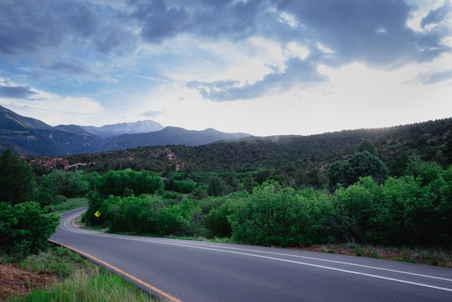

By Bishop W. Christopher Waddell, First Counselor in the Presiding Bishopric

Prior to travel restrictions caused by the current pandemic, I was returning home from an international assignment which, due to scheduling issues, created a Sunday layover. I had time between flights to attend a local sacrament meeting, where I was also able to share a brief message. Following the meeting, an enthusiastic deacon approached me and asked if I knew President Nelson and if I had ever had a chance to shake his hand. I answered that I did know him, that I had shaken his hand, and that, as a member of the Presiding Bishopric, I had the opportunity to meet with President Nelson and his counselors a couple of times each week. The young deacon then sat down on a chair, threw his hands in the air, and shouted, “This is the greatest day of my life!” Brothers and sisters, I may not throw my hands in the air and shout, but I am eternally grateful for a living prophet and for the direction we receive from prophets, seers, and revelators, especially during these times of challenge. From the beginning of time, the Lord has provided direction to help His people prepare spiritually and temporally against the calamities and trials that He knows will come as part of this mortal experience. These calamities may be personal or general in nature, but the Lord’s guidance will provide protection and support to the extent that we heed and act upon His counsel. A wonderful example is provided in an account from the book of Genesis, where we learn of Joseph in Egypt and his inspired interpretation of Pharaoh’s dream.
Contact Us
Address:
The Weather Center
123 Main Street.
Franklin, MI 87654